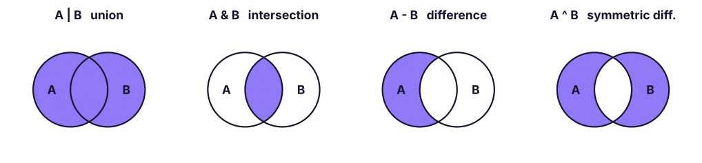

Tuples & Sets: Immutable Records, Unpacking and Set Algebra
Use tuples for fixed records and multiple return values, master unpacking and named tuples, and use sets for uniqueness, fast membership tests and set algebra (union, intersection, difference) on real customer data.
- Create tuples, explain immutability and hashability, and unpack tuples including starred unpacking
- Use namedtuple and dataclass-style records for readable fixed structures
- Create sets and frozensets and use add, discard, remove, update and set operators
- Apply union, intersection, difference and symmetric difference to compare groups
- Choose between list, tuple, set and dict for a given task
Tuples
A tuple is an ordered, immutable sequence written with commas (brackets are usually optional).
point = (28.61, 77.20)
single = (5,) # the trailing comma makes a one-item tuple
empty = ()
rec = "E101", "Kavya Iyer", "HR", 97000 # packing: no brackets needed
print(point, type(single).__name__, type((5)).__name__, rec[1], rec[-1], rec[1:3], len(rec))
print(rec.count("HR"), rec.index("HR"), (1, 2) + (3,), (0,) * 3, 5 in (1, 5, 9))
try: rec[0] = "E102"
except TypeError as e: print("Error:", e)(28.61, 77.2) tuple int Kavya Iyer 97000 ('Kavya Iyer', 'HR') 4
1 2 (1, 2, 3) (0, 0, 0) True
Error: 'tuple' object does not support item assignmentUnpacking
emp_id, name, dept, salary = rec # one name per item
a, b = 1, 2; a, b = b, a # swap
first, *others = (10, 20, 30, 40) # * collects the rest into a list
*head, last = (10, 20, 30, 40)
x, (y, z) = 1, (2, 3) # nested unpacking
_, dept_only, *_ = rec # _ means "ignore"
print(emp_id, name, a, b, first, others, head, last, x, y, z, dept_only)
for city, sales in [("Pune", 120), ("Delhi", 95)]: # unpack in loops
print(city, sales)E101 Kavya Iyer 2 1 10 [20, 30, 40] [10, 20, 30] 40 1 2 3 Kavya Iyer Pune 120 Delhi 95
Why tuples?
| Use | Example |
|---|---|
| Fixed records | (lat, lon), (year, month), a row from a database |
| Multiple return values | def stats(x): return min(x), max(x) → lo, hi = stats(data) |
| Dictionary keys and set members (hashable) | sales[("North", "Technology")] |
| Protection from accidental change | Constants like METROS = ("Delhi", "Mumbai") |
| Slightly less memory and faster than lists |
def describe(values):
return min(values), max(values), sum(values) / len(values)
lo, hi, avg = describe([4, 8, 15, 16, 23, 42])
print(lo, hi, round(avg, 2), describe([1, 2]))
print(hash((1, 2)), "| a tuple containing a list is not hashable:", end=" ")
try: hash((1, [2]))
except TypeError as e: print(e)4 42 18.0 (1, 2, 1.5) -3550055125485641917 | a tuple containing a list is not hashable: unhashable type: 'list'
t = ([1, 2], 3); t[0].append(9) works, because the tuple holds a reference to a mutable list. The tuple itself still points to the same list.
Named tuples and data classes
When a record has many fields, positions like rec[3] are hard to read. Name the fields:
from collections import namedtuple
from dataclasses import dataclass
Employee = namedtuple("Employee", ["emp_id", "name", "dept", "salary"])
e = Employee("E101", "Kavya Iyer", "HR", 97000)
print(e, e.name, e[3], e._asdict(), e._replace(salary=100000).salary)
@dataclass(frozen=True) # frozen = immutable, like a tuple, but with types and methods
class Product:
sku: str
price: float
def with_gst(self, rate=0.18): return round(self.price * (1 + rate), 2)
p = Product("P101", 4500.0)
print(p, p.with_gst())Employee(emp_id='E101', name='Kavya Iyer', dept='HR', salary=97000) Kavya Iyer 97000 {'emp_id': 'E101', 'name': 'Kavya Iyer', 'dept': 'HR', 'salary': 97000} 100000
Product(sku='P101', price=4500.0) 5310.0Sets
A set is an unordered collection of unique, hashable items, written with braces. Sets support fast membership tests and mathematical set operations.
cities = {"Pune", "Delhi", "Kochi", "Delhi"} # duplicates vanish
print(cities, len(cities), "Pune" in cities)
empty = set() # {} is an empty DICT, not a set!
print(set("mississippi"), set([3, 1, 2, 3, 1]), sorted({5, 2, 9}), type({}).__name__, type(empty).__name__){'Delhi', 'Pune', 'Kochi'} 3 True
{'m', 'p', 's', 'i'} {1, 2, 3} [2, 5, 9] dict set| Method / operator | Effect |
|---|---|
s.add(x) |
Add an item |
s.update(iterable) or s \|= other |
Add many items |
s.discard(x) |
Remove x if present (no error) |
s.remove(x) |
Remove x; KeyError if missing |
s.pop() |
Remove and return an arbitrary item |
s.clear() |
Empty the set |
x in s |
Membership, O(1) on average |
len(s), min(s), max(s), sum(s), sorted(s) |
Usual helpers (sorted returns a list) |
s = {1, 2, 3}
s.add(4); s.update([5, 6]); s.discard(10); s.remove(1)
print(s, s.pop() in {2, 3, 4, 5, 6}){3, 4, 5, 6} TrueSet algebra

a = {"Asha", "Ravi", "Meera", "Kabir"}
b = {"Meera", "Kabir", "Zoya", "Neha"}
print("union :", sorted(a | b), " also a.union(b)")
print("intersection:", sorted(a & b), " also a.intersection(b)")
print("A - B :", sorted(a - b), " also a.difference(b)")
print("B - A :", sorted(b - a))
print("A ^ B :", sorted(a ^ b), " (in exactly one)")
print(a <= {"Asha", "Ravi", "Meera", "Kabir", "X"}, {"Asha"} < a, a.isdisjoint({"Zoya"})) # subset, proper subset, disjointunion : ['Asha', 'Kabir', 'Meera', 'Neha', 'Ravi', 'Zoya'] also a.union(b) intersection: ['Kabir', 'Meera'] also a.intersection(b) A - B : ['Asha', 'Ravi'] also a.difference(b) B - A : ['Neha', 'Zoya'] A ^ B : ['Asha', 'Neha', 'Ravi', 'Zoya'] (in exactly one) True True True
These are the same operations as SQL's UNION, INTERSECT and EXCEPT (SQL Lesson 9).
Frozen sets
frozenset is an immutable set: it can be a dictionary key or a member of another set.
fs = frozenset({"North", "South"})
print(fs, {fs: "regions"}, fs | {"East"})frozenset({'North', 'South'}) {frozenset({'North', 'South'}): 'regions'} frozenset({'North', 'South', 'East'})Real data: customer movement with sets
The Superstore data lets us rebuild the retention analysis from SQL Lesson 9 with sets:
import pandas as pd
s = pd.read_csv("superstore_sales.csv", parse_dates=["order_date"])
cust = {y: set(s.loc[s.order_date.dt.year == y, "customer_id"]) for y in (2023, 2024, 2025)}
print({y: len(c) for y, c in cust.items()})
retained = cust[2024] & cust[2025]
lost = cust[2024] - cust[2025]
new_in_2025 = cust[2025] - (cust[2023] | cust[2024])
print(f"Retained 2024→2025: {len(retained)} | lost: {len(lost)} | brand new in 2025: {len(new_in_2025)}")
print(f"Retention rate: {len(retained) / len(cust[2024]):.1%} (matches the SQL result: 467 of 590)")
print("Bought in all 3 years:", len(cust[2023] & cust[2024] & cust[2025]), "| bought in exactly one year:", len((cust[2023] ^ cust[2024] ^ cust[2025]) - (cust[2023] & cust[2024] & cust[2025]))){2023: 540, 2024: 590, 2025: 623}
Retained 2024→2025: 467 | lost: 123 | brand new in 2025: 52
Retention rate: 79.2% (matches the SQL result: 467 of 590)
Bought in all 3 years: 311 | bought in exactly one year: 128Same answers as the SQL queries, in three lines. Sets are also the fastest way to de-duplicate and to check membership in big collections:
import time, random
big_list = list(range(200_000)); big_set = set(big_list); probes = [random.randrange(400_000) for _ in range(300)]
t0 = time.perf_counter(); [p in big_list for p in probes]; t1 = time.perf_counter(); [p in big_set for p in probes]; t2 = time.perf_counter()
print(f"300 lookups: list {1000 * (t1 - t0):.1f} ms | set {1000 * (t2 - t1):.3f} ms")300 lookups: list 329.5 ms | set 0.244 ms
Choosing a collection
| Need | Use |
|---|---|
| Ordered, changeable sequence | list |
| Ordered, fixed record or dict key | tuple |
| Unique items, fast "is it in there?", set algebra | set |
| Key → value lookup | dict (next lesson) |
| Unique and ordered | dict.fromkeys(items) or a list + set |
| FIFO queue | collections.deque |
| Counting | collections.Counter |
Summary
- Tuples are ordered and immutable: use them for fixed records, multiple return values and dictionary keys; unpack with
a, b = tandfirst, *rest = t. - A one-item tuple needs a comma:
(5,). Use namedtuple or a frozen dataclass for readable records. - Sets hold unique, hashable items with O(1) membership;
{}is an empty dict, so useset(). - Set algebra:
|union,&intersection,-difference,^symmetric difference; subset tests with<=. - Sets turn retention/overlap analyses into one-liners and are far faster than lists for membership tests.
1. What is type((5))?
(5,) does.2. What does {1, 2, 3} & {2, 3, 4} return?
& is the intersection.3. Which can be used as a dictionary key?
4. How do you create an empty set?
{} creates an empty dictionary.5. What does first, *rest = (1, 2, 3, 4) assign to rest?
6. Why are set lookups faster than list lookups?
(1) Find the common cities between {"Pune","Delhi","Goa"} and {"Goa","Kochi","Pune"}. (2) Customers who bought in 2023 and 2024 but not in 2025 (use the Superstore sets). (3) Write min_max_mean(values) returning a tuple, and unpack it. (4) Check whether two words are anagrams using sorted and also using collections.Counter.
Show solution
print({"Pune","Delhi","Goa"} & {"Goa","Kochi","Pune"})
print(len((cust[2023] & cust[2024]) - cust[2025]))
def min_max_mean(v): return min(v), max(v), sum(v) / len(v)
lo, hi, m = min_max_mean([3, 9, 6])
from collections import Counter
print(sorted("listen") == sorted("silent"), Counter("listen") == Counter("silent"))Q: Tuple vs list: when would you choose each? Tuple for fixed, heterogeneous records, hashable keys and returning several values; list for homogeneous collections that change.
Q: How do you remove duplicates from a list while preserving order?
list(dict.fromkeys(items)); list(set(items)) does not preserve order.
Q: What is the time complexity of set membership and why? Average O(1) because sets are hash tables (worst case O(n) with many collisions).
Q: How do you find items in A but not in B?
A - B for sets; for lists use a set for B: [x for x in A if x not in set_b].
Practise more online
Free, trusted places to test yourself on this topic. Links open the original site in a new tab.